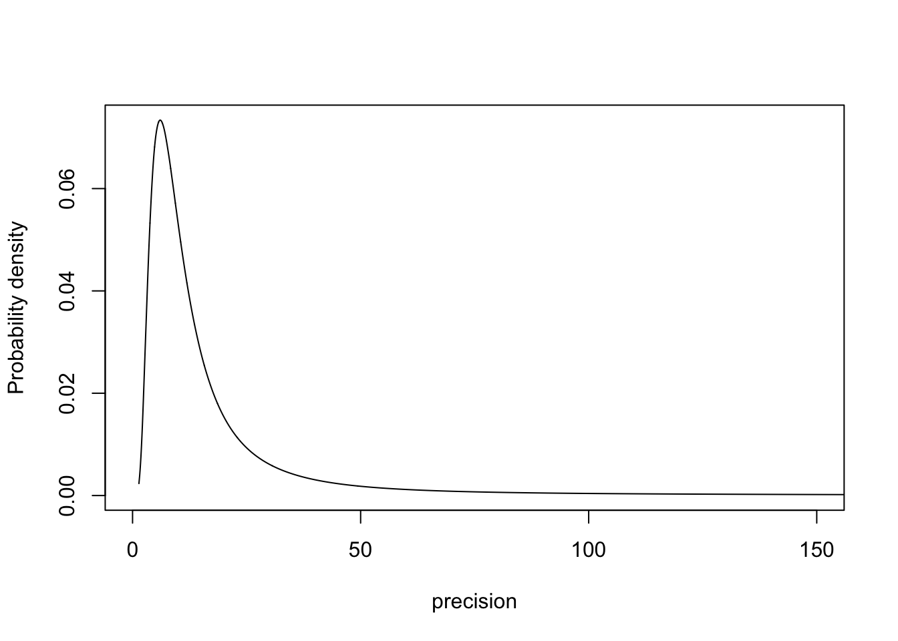
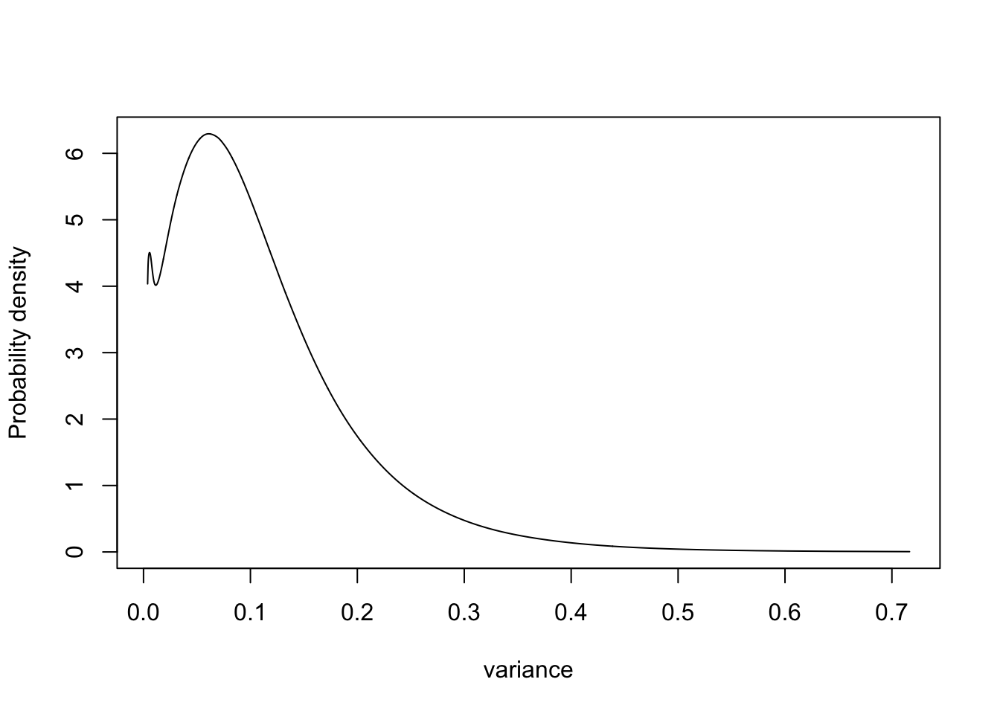
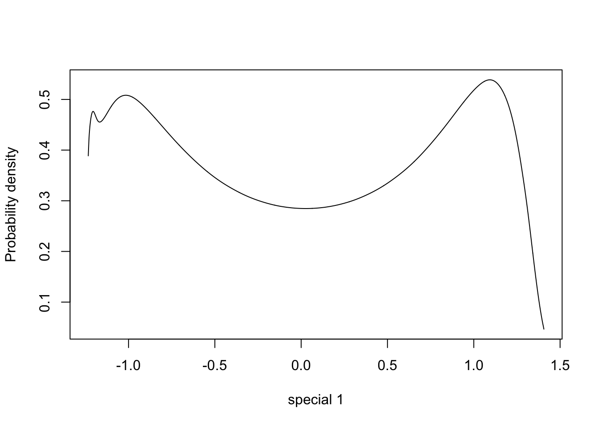
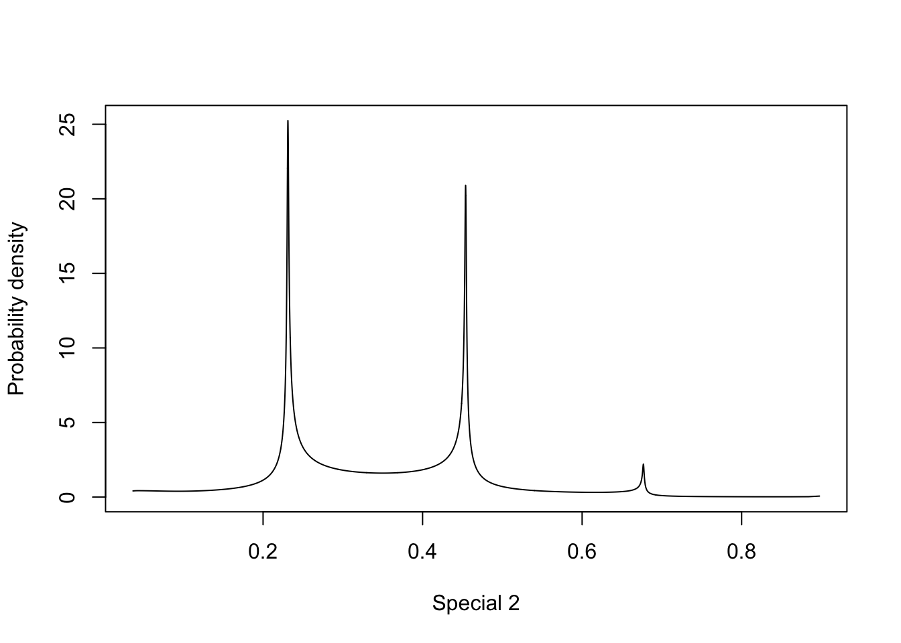

Parametrisations matter for interpretation: Seeds example
Haakon Bakka
BTopic123 updated 31. Jan 2018
1 About
This is a copy of btopic102. With some additional comments.
2 Initialise R session
We load any packages and set global options. You may need to install these libraries (Installation and general troubleshooting).
library(INLA)3 Copy of btopic102
3.1 Load data, rename, rescale
data(Seeds)This Seeds is the original dataframe. We will keep
Seeds unchanged, and create another object
(df, our modeling dataframe) later. Next we explain the
data.
# Run: ?Seeds
head(Seeds)## r n x1 x2 plate
## 1 10 39 0 0 1
## 2 23 62 0 0 2
## 3 23 81 0 0 3
## 4 26 51 0 0 4
## 5 17 39 0 0 5
## 6 5 6 0 1 6# - r is the number of seed germinated (successes)
# - n is the number of seeds attempted (trials)
# - x1 is the type of seed
# - x2 is the type of root extract
# - plate is the numbering of the plates/experimentsAll the covariates are factors in this case, and the numbering of the plates are arbitrary. We do not re-scale any covariates. The observations are integers, so we do not re-scale these either.
df = data.frame(y = Seeds$r, Ntrials = Seeds$n, Seeds[, 3:5])I always name the dataframe that is going to be used in the inference
to df, keeping the original dataframe. The observations are
always named \(y\).
3.2 Observation Likelihood
family1 = "binomial"
control.family1 = list(control.link=list(model="logit"))
# number of trials is df$NtrialsThis specifies which likelihood we are going to use for the
observations. The binomial distribution is defined with a certain number
of trials, in INLA known as Ntrials. If there were
hyper-parameters in our likelihood, we would specify the priors on these
in control.family.
3.3 Formula
hyper1 = list(theta = list(prior="pc.prec", param=c(1,0.01)))
formula1 = y ~ x1 + x2 + f(plate, model="iid", hyper=hyper1)This specifies the formula, and the priors for any hyper-parameters
in the random effects. See inla.doc("pc.prec") for the
description of this prior (exponential distribution on \(\sigma\) with \(\lambda = \frac{\log(0.01)}{1}\)).
3.4 Call INLA
Next we run the inla-call, where we just collect variables we have defined.
res1 = inla(formula=formula1, data=df,
family=family1, Ntrials=Ntrials,
control.family=control.family1)The Ntrials picks up the correct column in the
dataframe.
3.5 Plot the marginal of a hyper-parameter
We must transform the marginal
(res1$marginals.hyperpar$Precision for
plate) to a parametrisation that makes sense to use for interpretation. The only parametrisation I like is $\sigma$, marginal standard deviation. For numerical reasons, we need to transform the internal marginals. To find define the function used in the transformation, we look up the internal parametrisation, which is $\log(precision)$, seeinla.doc(“iid”)`.
m.sigma = inla.tmarginal(fun = function(x) exp(-1/2*x), marginal =
res1$internal.marginals.hyperpar$`Log precision for plate`)
# - m.sigma is the marginal for the standard deviation parameter in the iid random effect
plot(m.sigma, type="l", xlab = expression(sigma[iid]), ylab = "Probability density")
4 Examples of parametrisation
This is what is new on this page.
4.1 Parametrisation 1: Precision
m.sigma = inla.tmarginal(fun = function(x) exp(x), marginal =
res1$internal.marginals.hyperpar$`Log precision for plate`)
plot(m.sigma, type="l", xlab = "precision", ylab = "Probability density", xlim=c(0, 150))
4.2 Parametrisation 2: Variance
m.sigma = inla.tmarginal(fun = function(x) exp(-x), marginal =
res1$internal.marginals.hyperpar$`Log precision for plate`)
plot(m.sigma, type="l", xlab = "variance", ylab = "Probability density")
4.3 Parametrisation 3: Special function
Define special function
fun = function(x) -1*atan((3-10*x)*1.2)
xval = -10000:10000/10000
plot(xval, fun(xval))m.sigma = inla.tmarginal(fun = function(x) exp(-1/2*x), marginal =
res1$internal.marginals.hyperpar$`Log precision for plate`)
m.sigma = inla.tmarginal(fun = fun, marginal = m.sigma)
plot(m.sigma, type="l", xlab = "special 1", ylab = "Probability density")
4.4 Parametrisation 4: Special function 2
Define special function
## The derivative
# - always positive
fun = function(x) sin(31*(x+0.55)) + 1.1
xval = 0:10000/10000
plot(xval, fun(xval))## The transformation function
# - Integral of the previous
# - Monotone
fun = function(x) -1/31*cos(31*(x+0.55)) + 1.1*x
xval = 0:10000/10000
plot(xval, fun(xval))m.sigma = inla.tmarginal(fun = function(x) exp(-1/2*x), marginal =
res1$internal.marginals.hyperpar$`Log precision for plate`)
m.sigma = inla.tmarginal(fun = fun, marginal = m.sigma)
plot(m.sigma, type="l", xlab = "Special 2", ylab = "Probability density")
5 Discussion
Let us ignore the behaviour to the very left of the plots, as these are numerical artifacts, and focus on the multimodality shown. How multimodal a posterior is depends on the parametrisation. Similarly, we can always find a parametrisation where the posterior is a standard Gaussian. For the precision parametrisation, the most important information is in the decay rate for the tail of the distribution, which is not something we can easily visualise.
All in all, this means that we cannot “interpret posterior plots by looking at them”, unless we are confident that the parametrisation represents the right thing. I would suggest using a parametrisation where the “model density” along the x-axis is in some sense “uniform”. This is true for the sigma parametrisation.
To be on the safe side, I suggest just visualising the credible intervals, as these are “interpretable” on any (monotone) parametrisation.